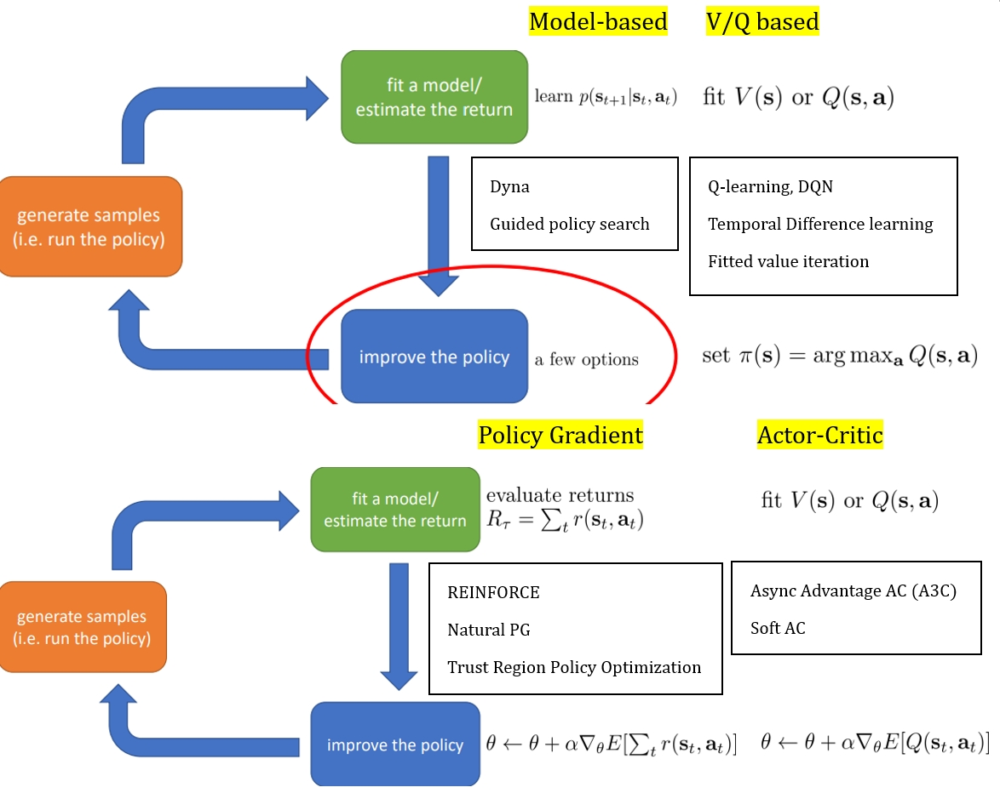
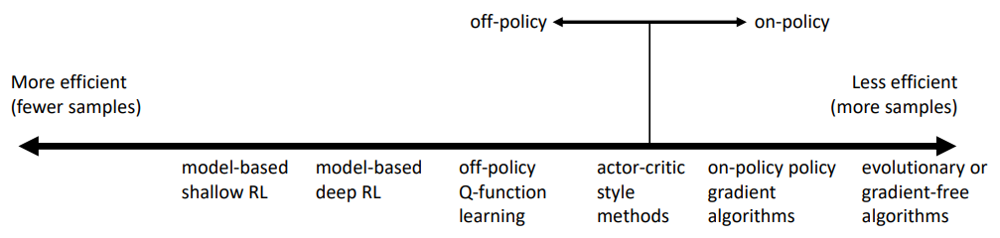
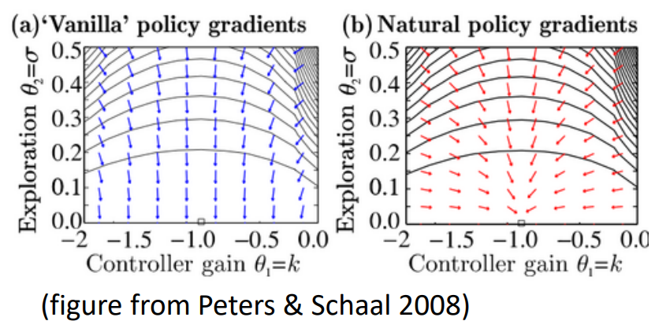

Summary of Deep Reinforcement Learning
Lecture 1: Intro and overview
Beyond learning from reward
- basic RL: maximize rewards
- other methods:
Inverse RL: learn reward function from exampleTransfer Learning: transfer knowledge between domainsMeta learning: learning to learnPredicting: use predictions to act
Lecture 2: Supervised Learning of behaviors
- small deviations accumulate to very different trajectories and states compared with training data (not Markovian)
- solution: generate examples of "mistakes" and their "corrections" (teach "what didn't work and how to fix", not "what worked")
Lecture 3: PyTorch tutorial
Lecture 4: Intro to RL
- expanding the total reward over trajectory $ \tau = (s_1, a_1, s_2, a_2 \ldots) $:
\[
\begin{align*}
J &= E_\tau \underbrace{ \sum_t r(s_t, a_t) }_{ r(\tau) } \\
&= E_{s_1} \underbrace{
E_{a_1} \underbrace{
r(s_1, a_1) + E_{s_2} E_{a_2} r(s_2, a_2) + \ldots
}_{ Q(s_1, a_1) }
}_{V(s_1)}
\end{align*}
\]
Types of RL algorithms

off policy: able to improve the policy without generating new samples from that policyon policy: once the policy is changed, need to generate new samples

Value function fitting: At best, minimizes error of fit (Bellman error), not the same as expected reward; At worst, doesn't optimize anything.Model based: minimizes error of fit, but better model != better policyPolicy Gradient: gradient descent on true objective
Lecture 5: Policy Gradients
\[
\begin{align*}
J(\theta) &= E_\tau r(\tau) = \int p_\theta(\tau) \; r(\tau) \; d\tau \\
\nabla_\theta J &= \int \nabla p \; r(\tau) \; d\tau =
\int p \nabla \log p \; r(\tau) \; d\tau =
E_\tau \underbrace{ \nabla \log p }_{ \sum_t \nabla \log \pi_\theta(a_t | s_t) } \; r(\tau) \\
\text{because} \; p &= p(s_1) \prod_t \pi_\theta(a_t | s_t) \; p(s_{t+1} | s_t, a_t)
\end{align*}
\]
notation $ \nabla \log \pi(\tau) := \sum_t \nabla \log \pi_\theta(a_t | s_t) $
- approximate with sample mean:
\[
\nabla J \approx {1\over N} \sum_n \left( \sum_{t=1}^T \nabla \log \pi(a_{n, t} | s_{n, t}) \right) \left( \sum_{t=1}^T r(s_{n, t}, a_{n, t}) \right)
\]
Improvement 1: reward to go
- causality: actions only affect the future, remove past rewards
\[
\nabla J \approx {1\over N} \sum_n \sum_{t=1}^T \nabla \log \pi(a_{n, t} | s_{n, t}) \underbrace{ \left( \sum_{t'=t}^T r(s_{n, t'}, a_{n, t'}) \right) }_{ \text{reward to go} \; \hat Q_{n, t} }
\]
Improvement 2: subtracting a reward baseline
- a simple baseline: mean return
\[
\begin{align*}
\nabla J & \approx {1\over N} \sum_n \nabla \log p \; [r(\tau) - b] \\
b & := {1\over N} \sum_n r(\tau) \\
\text{because} \; E [\nabla \log p \; b] &= \int \underbrace{ p \nabla \log p }_{ \nabla p } \; b \; d\tau = b \nabla \underbrace{ \int p \; d\tau }_{ 1 } = 0
\end{align*}
\]
- optimal baseline
\[
\begin{align*}
\text{Var} [x] &= E[x^2] - E[x]^2 \\
\nabla J &= E[ \underbrace{ \nabla \log p }_{g} \; (r - b) ] \\
\text{Var} &= E[ (g (r-b))^2 ] - \underbrace{ E[ g (r - b) ]^2 }_{ = E[ g r ]^2 } \\
\text{let} & \; {d \text{Var} \over db} = 0 \\
\implies & {d \over db} \left( -2b E[g(\tau)^2 r(\tau)] + b^2 E[g(\tau)^2] \right) = 0 \\
\implies & b = { E[g^2 r] \over E[g^2] }
\end{align*}
\]
Improvement 3: from on-policy to off-policy PG
the above result is on-policy —— need to generate new samples whenever policy neural net is updated
- importance sampling: learn about one distribution from another distribution
\[
E_{x\sim p(x)}[y] = \int p(x) \; y \; dx = \int q(x) {p(x) \over q(x)} \; y \; dx = E_{x\sim q(x)}[ {p(x) \over q(x)} y]
\]
- didn't quite understand pages 24-26, conclusion:
\[
\begin{align*}
\text{on-policy } & \nabla_\theta J(\theta) \approx {1\over N} \sum_n \sum_t \nabla_\theta \log \pi_\theta (a_{n, t} | s_{n, t}) \hat Q_{n, t} \\
\text{off-policy } & \nabla_\alpha J(\alpha) \approx {1\over N} \sum_n \sum_t {\pi_\alpha(a_{n, t} | s_{n, t}) \over \pi_\theta (a_{n, t} | s_{n, t}) } \nabla_\alpha \log \pi_\alpha (a_{n, t} | s_{n, t}) \hat Q_{n, t}
\end{align*}
\]
Improvement 4: Natural PG: rescaling the Vanilla PG

- didn't quite understand pages 35-36, conclusion:
\[
\begin{align*}
\text{ Vanilla: } & \theta \leftarrow \theta + \alpha \nabla J \\
\text{ Natural: } & \theta \leftarrow \theta + \alpha F^{-1} \nabla J \\
\text{ where: } & F = E_{\pi_\theta} [ (\nabla \log \pi) \; (\nabla \log \pi)^T ]
\end{align*}
\]
Lecture 6: Actor-Critic
Improvement 5: Actor-Critic: still trying to reduce variance
\[
\begin{align*}
\text{before: single trajectory } & \nabla J \approx {1\over N} \sum_n \sum_t \nabla \log \pi ( \hat Q_{n, t} - b) \\
\text{AC: Exp over trajectories } & \nabla J \approx {1\over N} \sum_n \sum_t \nabla \log \pi ( \underbrace{ Q(s_{n, t}, a_{n, t}) - V(s_{n, t}) }_{ A: \text{ advantage } } )
\end{align*}
\]
\[
\begin{align*}
Q(s_t, a_t) &= r(s_t, a_t) + E_{ s_{t+1} } [V(s_{t+1})] \\
&\approx r(s_t, a_t) + V(s_{t+1}) \\
\implies A(s_t, a_t) &\approx r(s_t, a_t) + V(s_{t+1}) - V(s_t)
\end{align*}
\]
- use neural net \(\phi\) to approximate \(V\) (supervised learning)
\[
\begin{align*}
L_{\text{MSE}}(\phi) &= {1\over 2} \sum_n \lVert V_\phi(s_n) - y_n \rVert^2 \\
y_{n, t} &= r(s_{n, t}, a_{n, t}) + \underbrace{ \gamma \in [0, 1] }_{ \text{ discount } } \; \underbrace{ V_\phi(s_{n, \; t+1}) }_{ \text{ bootstrapping } }
\end{align*}
\]
- skip pages 14-15: discount factor for PG
Improvement 6: from on-policy to off-policy AC
- on-policy AC
\[
\begin{align*}
& \text{1. sample } (s, a, s', r) \\
& \text{2. fit } V_\phi \text{ using } r + \gamma V_\phi(s') \\
& \text{3. eval } A(s, a) = r(s, a) + \gamma V_\phi(s') - V_\phi(s) \\
& \text{4. } \nabla J \approx \nabla \log \pi(a | s) A(s, a) \\
& \text{5. } \theta \leftarrow \theta + \alpha \nabla J
\end{align*}
\]
- off-policy AC, can still use importance sampling, but use another method: $ V \to Q $
- cannot use the above directly because: $ a $ comes from old policies, not latest
\[
\begin{align*}
& \text{1. sample } (s, a, s', r), \text{ store in } R \\
& \text{2. sample a batch } \{ s_n, a_n, s_n', r_n \} \text{ from } R \\
& \text{3. fit } Q_\phi \text{ using } y_n = r_n + \gamma Q_\phi(s_n', a_n') \text{ for each } s_n, a_n \quad a_n' \sim \pi(a | s_n') \\
& \text{4. } \nabla J \approx {1\over N} \sum_n \nabla \log \pi(a_n^\pi | s_n) Q(s_n, a_n^\pi) \quad a_n^\pi \sim \pi(a|s_n) \\
& \text{5. } \theta \leftarrow \theta + \alpha \nabla J
\end{align*}
\]
page 26